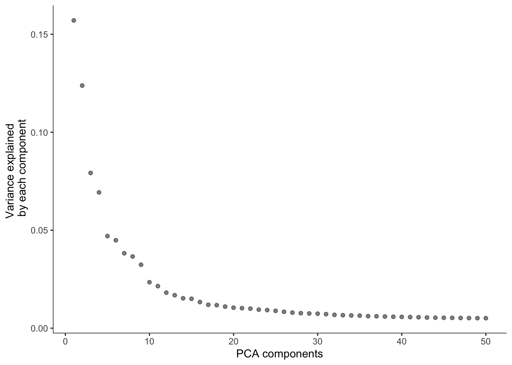
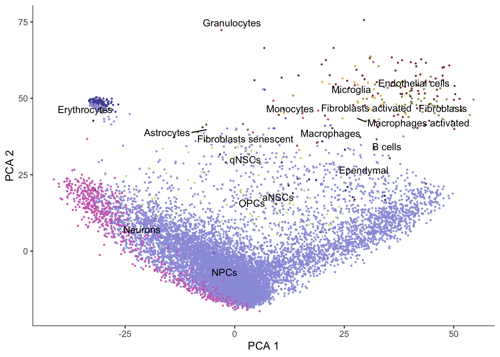
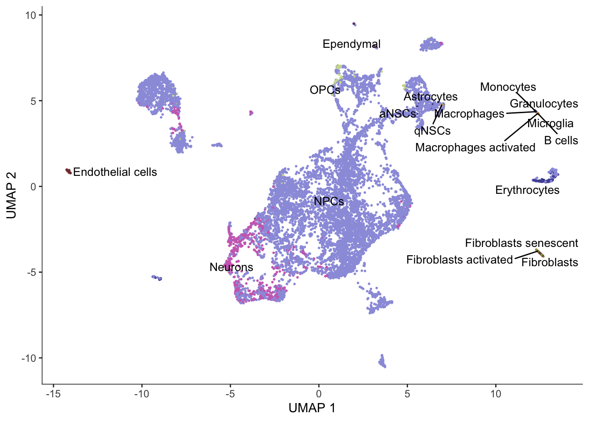
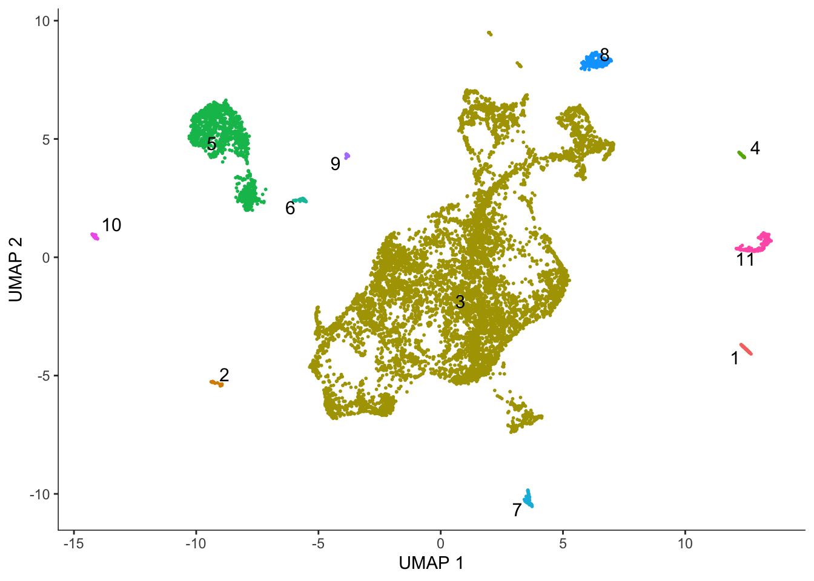
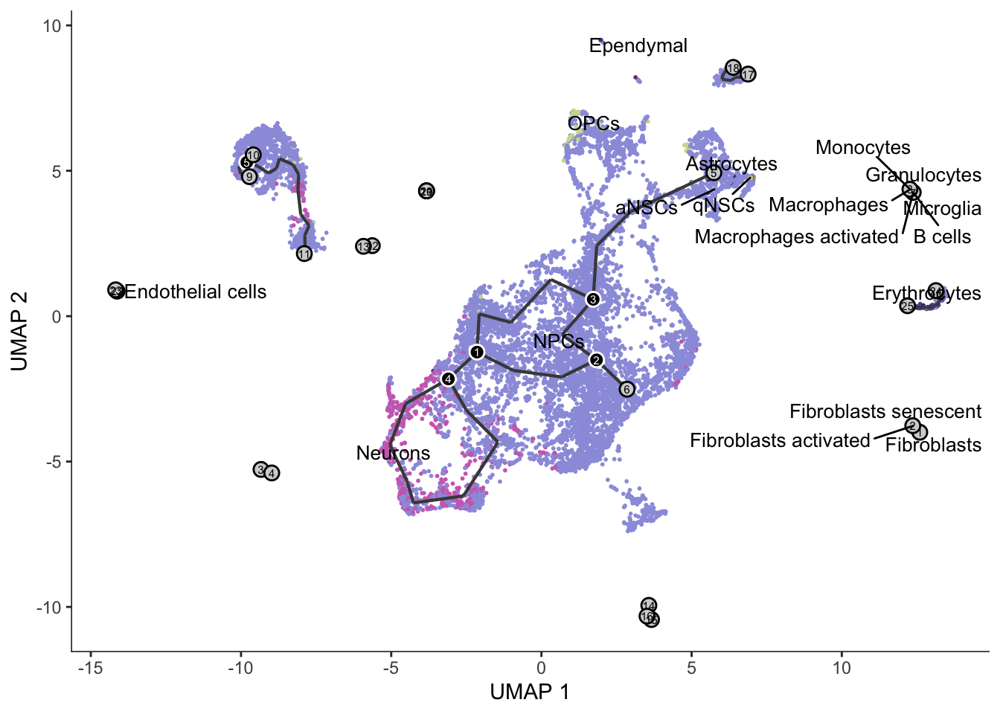
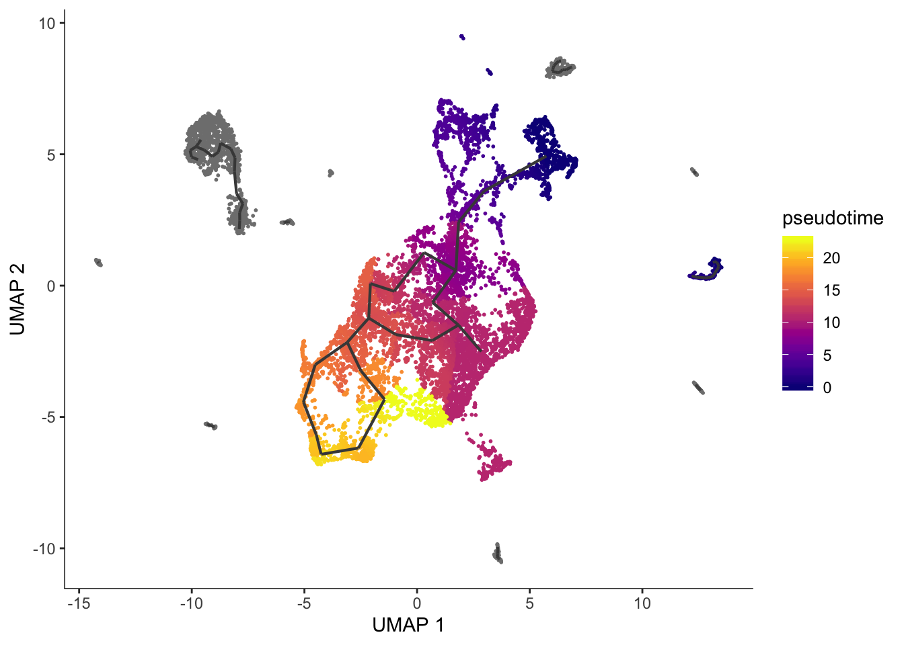
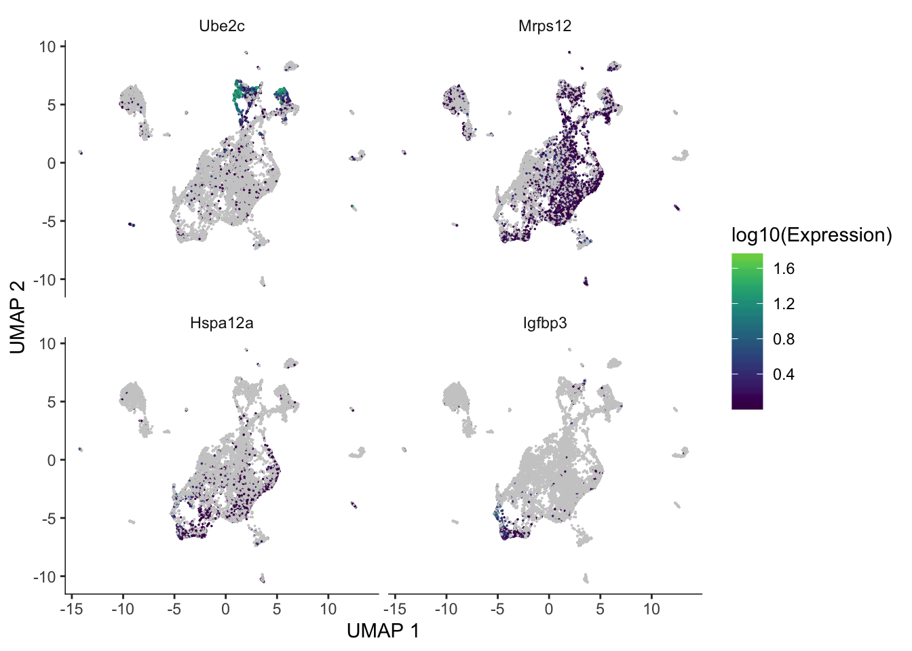

Last updated: 2019-07-23
Checks: 7 0
Knit directory: BUS_notebooks_R/
This reproducible R Markdown analysis was created with workflowr (version 1.4.0). The Checks tab describes the reproducibility checks that were applied when the results were created. The Past versions tab lists the development history.
Great! Since the R Markdown file has been committed to the Git repository, you know the exact version of the code that produced these results.
Great job! The global environment was empty. Objects defined in the global environment can affect the analysis in your R Markdown file in unknown ways. For reproduciblity it’s best to always run the code in an empty environment.
The command set.seed(20181214) was run prior to running the code in the R Markdown file. Setting a seed ensures that any results that rely on randomness, e.g. subsampling or permutations, are reproducible.
Great job! Recording the operating system, R version, and package versions is critical for reproducibility.
Nice! There were no cached chunks for this analysis, so you can be confident that you successfully produced the results during this run.
Great job! Using relative paths to the files within your workflowr project makes it easier to run your code on other machines.
Great! You are using Git for version control. Tracking code development and connecting the code version to the results is critical for reproducibility. The version displayed above was the version of the Git repository at the time these results were generated.
Note that you need to be careful to ensure that all relevant files for the analysis have been committed to Git prior to generating the results (you can use wflow_publish or wflow_git_commit). workflowr only checks the R Markdown file, but you know if there are other scripts or data files that it depends on. Below is the status of the Git repository when the results were generated:
Ignored files:
Ignored: .Rhistory
Ignored: .Rproj.user/
Ignored: BUS_notebooks_R.Rproj
Ignored: data/whitelist_v3.txt.gz
Ignored: output/out_pbmc1k/
Untracked files:
Untracked: ensembl/
Untracked: output/neuron10k/
Note that any generated files, e.g. HTML, png, CSS, etc., are not included in this status report because it is ok for generated content to have uncommitted changes.
These are the previous versions of the R Markdown and HTML files. If you’ve configured a remote Git repository (see ?wflow_git_remote), click on the hyperlinks in the table below to view them.
| File | Version | Author | Date | Message |
|---|---|---|---|---|
| Rmd | 846cd23 | Lambda Moses | 2019-07-23 | Don’t show package loading messages |
| html | 002b84d | Lambda Moses | 2019-07-23 | Build site. |
| Rmd | 84b7653 | Lambda Moses | 2019-07-23 | Monocle 3 notebook |
This notebook does pseudotime analysis of the 10x 10k neurons from an E18 mouse with Monocle 3. Please refer to the Monocle 3 website for installation instruction. Gdal is required for Monocle 3 due to the sf dependency. The Python package louvain (which requires Python igraph, which requires compilation) is recommended, though not strictly required.
Monocle 3 has a few improvements compared to Monocle 2: Monocle 3 infers trajectory much faster, supports partitioning of the data into separate trajectories in case of different cell lineages, supports large datasets on disk, allows cycles in the trajectory, and supports 3D plotting. Monocle 3 has been used on over 2 million cells for the Mouse Organogenesis Cell Atlas (MOCA).
The gene count matrix of the 10k neuron dataset has already been generated with the kallisto | bustools pipeline and filtered for the Monocle 2 notebook. Cell types have also been annotated with SingleR in that notebook. Please refer to the first 3 main sections of that notebook for instructions on how to use kallisto | bustools, remove empty droplets, and annotate cell types. So this notebook will start with Monocle 3 analysis right away.
The package biomaRt is from Bioconductor. BUSpaRse and monocle3 are on GitHub. Packages tidyverse and ggsci (just for the D3 palette) are on CRAN.
library(monocle3)
library(biomaRt)
library(BUSpaRse)
library(tidyverse)
library(ggsci)cell_data_set objectThe filtered gene count matrix and the cell annotation were saved from the Monocle 2 notebook.
annot <- readRDS("./output/neuron10k/cell_types.rds")
mat_filtered <- readRDS("./output/neuron10k/mat_filtered.rds")Just to show the structures of those 2 objects:
dim(mat_filtered)[1] 23342 11031class(mat_filtered)[1] "dgCMatrix"
attr(,"package")
[1] "Matrix"Row names are Ensembl gene IDs.
head(rownames(mat_filtered))[1] "ENSMUSG00000094619.2" "ENSMUSG00000095646.1" "ENSMUSG00000073406.10"
[4] "ENSMUSG00000079491.9" "ENSMUSG00000046808.17" "ENSMUSG00000092300.7" head(colnames(mat_filtered))[1] "AAACCCACACGCGGTT" "AAACCCACAGCATACT" "AAACCCACATACCATG"
[4] "AAACCCAGTCGCACAC" "AAACCCAGTGCACATT" "AAACCCAGTGGTAATA"str(annot)List of 10
$ scores : num [1:11031, 1:28] 0.188 0.192 0.183 0.265 0.186 ...
..- attr(*, "dimnames")=List of 2
.. ..$ : chr [1:11031] "AAACCCACACGCGGTT" "AAACCCACAGCATACT" "AAACCCACATACCATG" "AAACCCAGTCGCACAC" ...
.. ..$ : chr [1:28] "Adipocytes" "aNSCs" "Astrocytes" "Astrocytes activated" ...
$ labels : chr [1:11031, 1] "NPCs" "NPCs" "NPCs" "NPCs" ...
..- attr(*, "dimnames")=List of 2
.. ..$ : chr [1, 1:11031] "AAACCCACACGCGGTT" "AAACCCACAGCATACT" "AAACCCACATACCATG" "AAACCCAGTCGCACAC" ...
.. ..$ : NULL
$ r : num [1:11031, 1:358] 0.186 0.195 0.18 0.25 0.17 ...
..- attr(*, "dimnames")=List of 2
.. ..$ : chr [1:11031] "AAACCCACACGCGGTT" "AAACCCACAGCATACT" "AAACCCACATACCATG" "AAACCCAGTCGCACAC" ...
.. ..$ : chr [1:358] "ERR525589Aligned" "ERR525592Aligned" "SRR275532Aligned" "SRR275534Aligned" ...
$ pval : Named num [1:11031] 0.0396 0.0582 0.0366 0.0107 0.0329 ...
..- attr(*, "names")= chr [1:11031] "AAACCCACACGCGGTT" "AAACCCACAGCATACT" "AAACCCACATACCATG" "AAACCCAGTCGCACAC" ...
$ labels1 : chr [1:11031, 1] "NPCs" "NPCs" "NPCs" "NPCs" ...
..- attr(*, "dimnames")=List of 2
.. ..$ : chr [1:11031] "AAACCCACACGCGGTT" "AAACCCACAGCATACT" "AAACCCACATACCATG" "AAACCCAGTCGCACAC" ...
.. ..$ : NULL
$ labels1.thres: chr [1:11031] "NPCs" "X" "NPCs" "NPCs" ...
$ cell.names : chr [1:11031] "AAACCCACACGCGGTT" "AAACCCACAGCATACT" "AAACCCACATACCATG" "AAACCCAGTCGCACAC" ...
$ quantile.use : num 0.8
$ types : chr [1:358] "Adipocytes" "Adipocytes" "Adipocytes" "Adipocytes" ...
$ method : chr "single"Since we will do differential expression and gene symbols are more human readable than Ensembl gene IDs, we will get the corresponding gene symbols from Ensembl.
gns <- tr2g_ensembl(species = "Mus musculus", use_gene_name = TRUE,
ensembl_version = 94)[,c("gene", "gene_name")] %>%
distinct()Querying biomart for transcript and gene IDs of Mus musculusCache foundJust like how the Seurat workflow is centered around the Seurat object, Monocle 3 workflow is centered around the cell_data_set object. To create a cell_data_set object, we at least need the gene count matrix, and optionally need cell and gene metadata. Note that this is different from the CellDataSet object for Monocle 2. Cell metadata must have the column cell, for cell names or barcodes. Gene metadata must have the id column for gene ID (here Ensembl gene ID), and a column gene_short_name, for gene symbols, is recommended and is required for some functions. In addition, cell metadata must have cell names as row names and gene metadata must have gene IDs as gene names when initializing the cell_data_set object.
cell_meta <- data.frame(cell = colnames(mat_filtered),
cell_type = annot$labels[match(colnames(mat_filtered), annot$cell.names)],
stringsAsFactors = FALSE)
rownames(cell_meta) <- colnames(mat_filtered)
gene_meta <- gns %>%
filter(gene %in% rownames(mat_filtered), !is.na(gene)) %>%
rename(id = gene, gene_short_name = gene_name)
rownames(gene_meta) <- gene_meta$id
gene_meta <- gene_meta[rownames(mat_filtered),]
cds <- new_cell_data_set(mat_filtered, cell_metadata = cell_meta, gene_metadata = gene_meta)Part of the analysis is quite similar to a basic Seurat analysis: beginning with data normalization, then PCA, and then clustering and non-linear dimension reduction. Here the preprocess_cds will log1p normalize (default, uses log2) the data and perform PCA (default) or LSI (latent semantic indexing).
# Run PCA
cds <- preprocess_cds(cds, method = "PCA", num_dim = 50)
plot_pc_variance_explained(cds)
plot_cells(cds, reduction_method = "PCA",
color_cells_by = "cell_type", group_label_size = 3.5,
label_groups_by_cluster = FALSE) +
scale_color_d3(palette = "category20b")No trajectory to plot. Has learn_graph() been called yet?
# Seed for random initiation of UMAP
set.seed(4837)
cds <- reduce_dimension(cds, reduction_method = "UMAP", preprocess_method = "PCA", init = "random")
plot_cells(cds, color_cells_by = "cell_type", group_label_size = 3.5,
label_groups_by_cluster = FALSE) +
scale_color_d3(palette = "category20b")No trajectory to plot. Has learn_graph() been called yet?
Monocle 3 does Louvain clustering and partitions the dataset for separate trajectories based on Louvain clustering.
cds <- cluster_cells(cds)
plot_cells(cds, color_cells_by = "partition", group_cells_by = "partition",
group_label_size = 4)No trajectory to plot. Has learn_graph() been called yet?
Monocle 3’s trajectory inference is inspired by PAGA.
cds <- learn_graph(cds, verbose = FALSE)
|
| | 0%
|
|=================================================================| 100%
|
| | 0%
|
|=================================================================| 100%
|
| | 0%
|
|=================================================================| 100%
|
| | 0%
|
|=================================================================| 100%
|
| | 0%
|
|=================================================================| 100%Warning in min(data_df$weight[data_df$weight > 0]): no non-missing
arguments to min; returning Infplot_cells(cds, color_cells_by = "cell_type", label_groups_by_cluster = FALSE,
group_label_size = 3.5, graph_label_size = 2) +
scale_color_d3(palette = "category20b")
The cells are not ordered on the graph. To compute pseudotime, we should supply a root node or a vector of root cells that we know are the earliest stage of the trajectory. The function order_cells can also open a shiny app to choose root node interactively.
qnscs <- cell_meta$cell[cell_meta$cell_type == "qNSCs"]
cds <- order_cells(cds, root_cells = qnscs)
plot_cells(cds, color_cells_by = "pseudotime", label_branch_points = FALSE, label_leaves = FALSE, label_roots = FALSE)Cells aren't colored in a way that allows them to be grouped.
For the trajectory for which pseudotime is computed, Monocle 3 can find genes differentially expressed along the trajectory.
de_res <- graph_test(cds, neighbor_graph = "principal_graph", cores = 3)These are some of the most significant genes differentially expressed along the trajectory.
genes_plt <- c("mt-Nd6", "Actr1a", "Ss18", "Hspa12a")
plot_cells(cds, genes = genes_plt,
show_trajectory_graph = FALSE,
label_cell_groups = FALSE,
label_leaves = FALSE)
sessionInfo()R version 3.6.1 (2019-07-05)
Platform: x86_64-apple-darwin15.6.0 (64-bit)
Running under: macOS Mojave 10.14.5
Matrix products: default
BLAS: /Library/Frameworks/R.framework/Versions/3.6/Resources/lib/libRblas.0.dylib
LAPACK: /Library/Frameworks/R.framework/Versions/3.6/Resources/lib/libRlapack.dylib
locale:
[1] en_US.UTF-8/en_US.UTF-8/en_US.UTF-8/C/en_US.UTF-8/en_US.UTF-8
attached base packages:
[1] stats4 parallel stats graphics grDevices utils datasets
[8] methods base
other attached packages:
[1] ggsci_2.9 forcats_0.4.0
[3] stringr_1.4.0 dplyr_0.8.3
[5] purrr_0.3.2 readr_1.3.1
[7] tidyr_0.8.3 tibble_2.1.3
[9] ggplot2_3.2.0 tidyverse_1.2.1
[11] BUSpaRse_0.99.18 biomaRt_2.41.6
[13] monocle3_0.1.2 SingleCellExperiment_1.7.0
[15] SummarizedExperiment_1.15.5 DelayedArray_0.11.4
[17] BiocParallel_1.19.0 matrixStats_0.54.0
[19] GenomicRanges_1.37.14 GenomeInfoDb_1.21.1
[21] IRanges_2.19.10 S4Vectors_0.23.17
[23] Biobase_2.45.0 BiocGenerics_0.31.5
loaded via a namespace (and not attached):
[1] colorspace_1.4-1 rprojroot_1.3-2
[3] XVector_0.25.0 fs_1.3.1
[5] proxy_0.4-23 rstudioapi_0.10
[7] ggrepel_0.8.1 bit64_0.9-7
[9] AnnotationDbi_1.47.0 lubridate_1.7.4
[11] xml2_1.2.0 codetools_0.2-16
[13] knitr_1.23 zeallot_0.1.0
[15] jsonlite_1.6 workflowr_1.4.0
[17] Rsamtools_2.1.3 broom_0.5.2
[19] dbplyr_1.4.2 uwot_0.1.3
[21] compiler_3.6.1 httr_1.4.0
[23] backports_1.1.4 assertthat_0.2.1
[25] Matrix_1.2-17 lazyeval_0.2.2
[27] cli_1.1.0 htmltools_0.3.6
[29] prettyunits_1.0.2 tools_3.6.1
[31] igraph_1.2.4.1 gtable_0.3.0
[33] glue_1.3.1 GenomeInfoDbData_1.2.1
[35] RANN_2.6.1 reshape2_1.4.3
[37] rappdirs_0.3.1 Rcpp_1.0.1
[39] cellranger_1.1.0 vctrs_0.2.0
[41] Biostrings_2.53.1 nlme_3.1-140
[43] rtracklayer_1.45.1 DelayedMatrixStats_1.7.1
[45] xfun_0.8 plyranges_1.5.11
[47] rvest_0.3.4 irlba_2.3.3
[49] ensembldb_2.9.2 XML_3.98-1.20
[51] zlibbioc_1.31.0 scales_1.0.0
[53] BSgenome_1.53.0 hms_0.5.0
[55] ProtGenerics_1.17.2 AnnotationFilter_1.9.0
[57] yaml_2.2.0 curl_3.3
[59] memoise_1.1.0 gridExtra_2.3
[61] stringi_1.4.3 RSQLite_2.1.1
[63] GenomicFeatures_1.37.3 rlang_0.4.0
[65] pkgconfig_2.0.2 bitops_1.0-6
[67] evaluate_0.14 lattice_0.20-38
[69] GenomicAlignments_1.21.4 labeling_0.3
[71] bit_1.1-14 tidyselect_0.2.5
[73] RcppAnnoy_0.0.12 plyr_1.8.4
[75] magrittr_1.5 R6_2.4.0
[77] generics_0.0.2 DBI_1.0.0
[79] pillar_1.4.2 haven_2.1.1
[81] whisker_0.3-2 withr_2.1.2
[83] RCurl_1.95-4.12 modelr_0.1.4
[85] crayon_1.3.4 BiocFileCache_1.9.1
[87] rmarkdown_1.14 viridis_0.5.1
[89] progress_1.2.2 grid_3.6.1
[91] readxl_1.3.1 data.table_1.12.2
[93] blob_1.2.0 git2r_0.26.1
[95] digest_0.6.20 openssl_1.4.1
[97] RcppParallel_4.4.3 munsell_0.5.0
[99] viridisLite_0.3.0 askpass_1.1